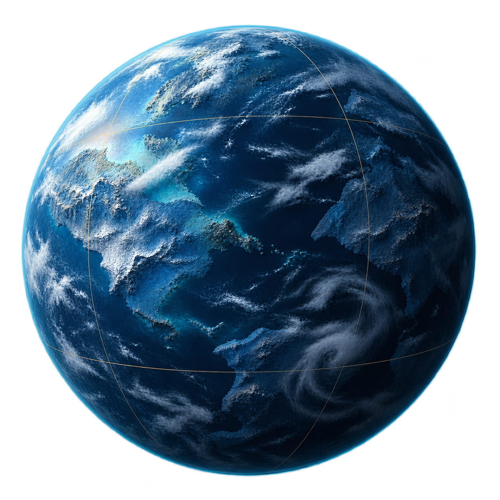
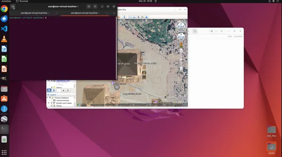
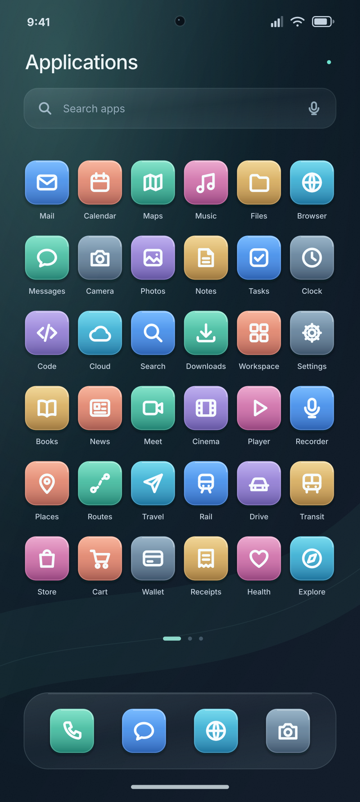
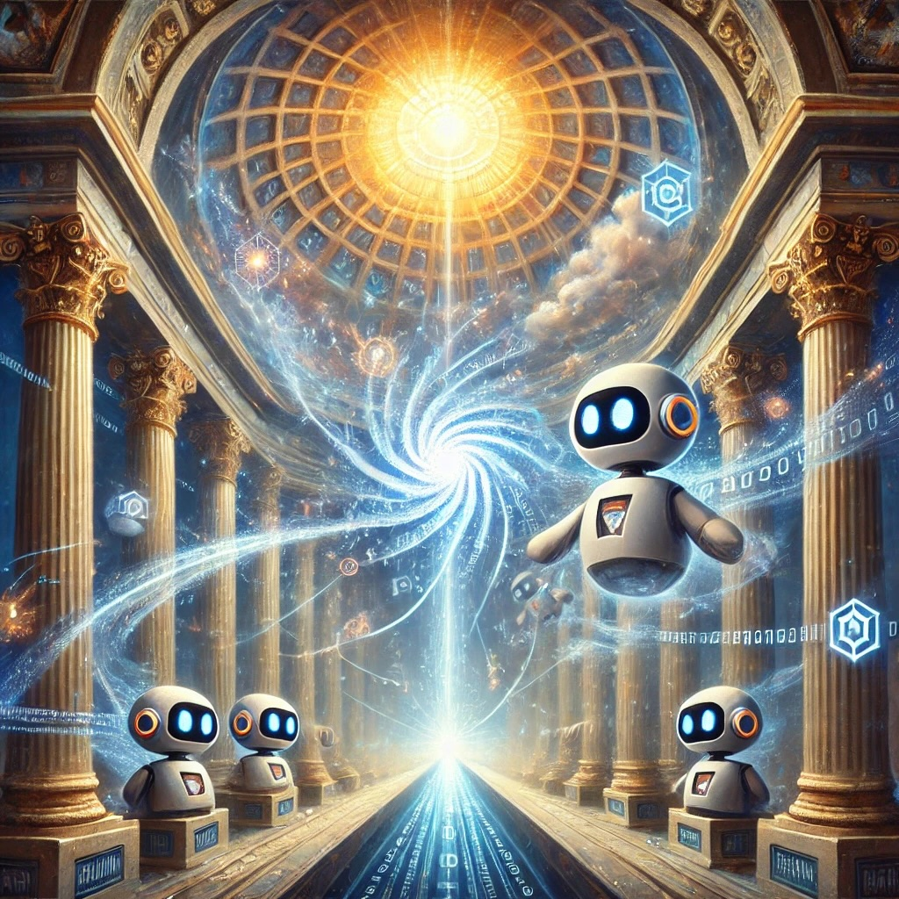
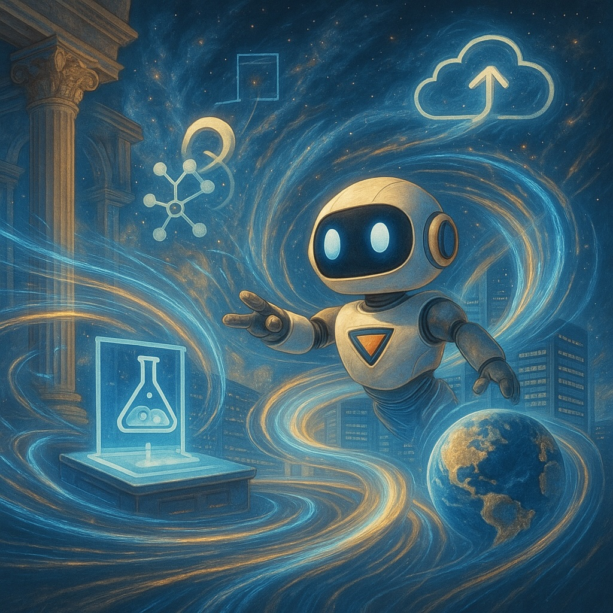

Skip to project details
OS-Copilot Series
Orbit
Index
An open world
of computer-using agents.



OS-Copilot Series
os-copilot.github.io
Open research
Computer-using agents.


Models, data, and environments
Pause orbit
All projects
Explore the
OS-Copilot research projects on GitHub
. Enable JavaScript for the interactive research map.